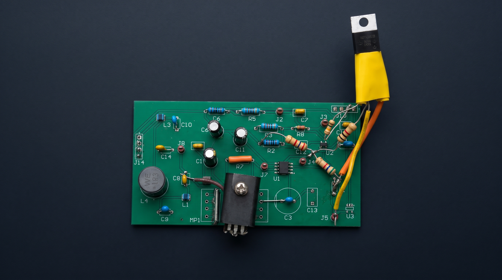
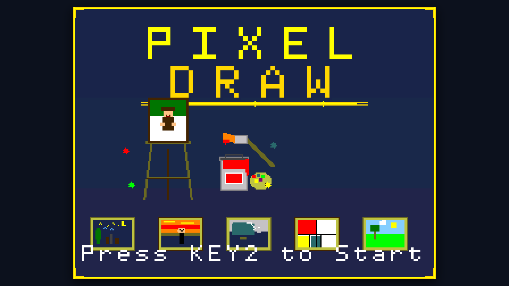
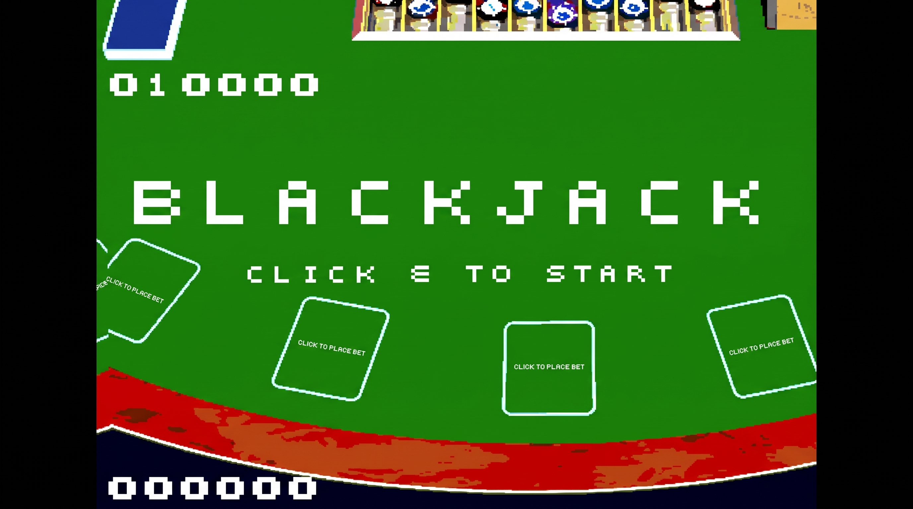

20268–16 MHz Class-D SDR Power Amplifier
Designed, fabricated, and bench-tuned a switching Class-D RF power amplifier and 5-pole LC filter PCB for a Software-Defined Radio, achieving 0.73% THD and under 0.4 W idle power.
Electrical Engineering & Robotics Minor — University of Toronto
I study Electrical Engineering at the University of Toronto, focusing on analog/RF circuit design, custom PCB layout, bare-metal embedded firmware, and digital hardware in Verilog on FPGA boards.

2026Designed, fabricated, and bench-tuned a switching Class-D RF power amplifier and 5-pole LC filter PCB for a Software-Defined Radio, achieving 0.73% THD and under 0.4 W idle power.

2026Closed-loop tracking and drawing system pairing a 30 FPS Python/OpenCV HSV marker tracker over JTAG UART with bare-metal C firmware on a Nios V RISC-V processor driving a VGA display on a DE1-SoC.

2025A Blackjack game built entirely in synthesizable Verilog RTL on the DE1-SoC: PS/2 keyboard in, VGA out, finite state machine game logic, and a hardware LFSR card dealer.